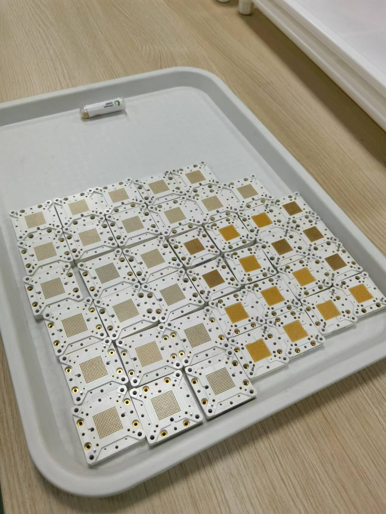
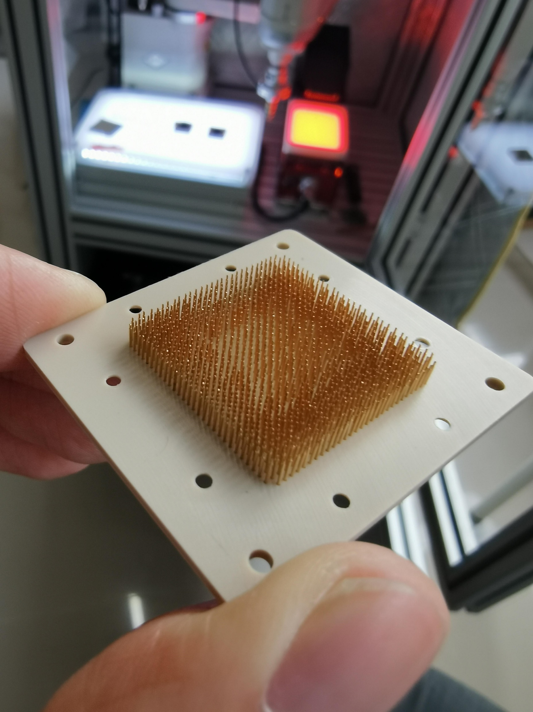

PogoPin探针卡植针机 智能化高精度加工检测设备



智能化高精度加工检测设备
联系我们
PogoPin探针卡植针机
兼容直径0.2–2mm，装配公差≤0.01mm，组装速度1,500 pcs/hr，自动化柔性生产。
核心技术参数
| 兼容范围 | 直径0.2–2mm，支持20+款探针型号 |
|---|---|
| 组装精度 | 装配公差 ≤ 0.01mm |
| 组装速度 | 1,500 pcs/hr（2–3倍人工效率） |
| 控制方式 | 自动化柔性生产，参数化配置 |
应用领域
- 半导体测试探针卡制造
- IC测试插座装配